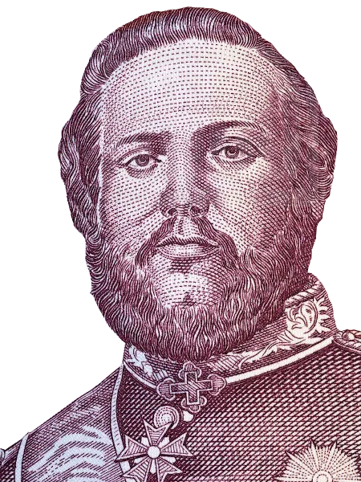
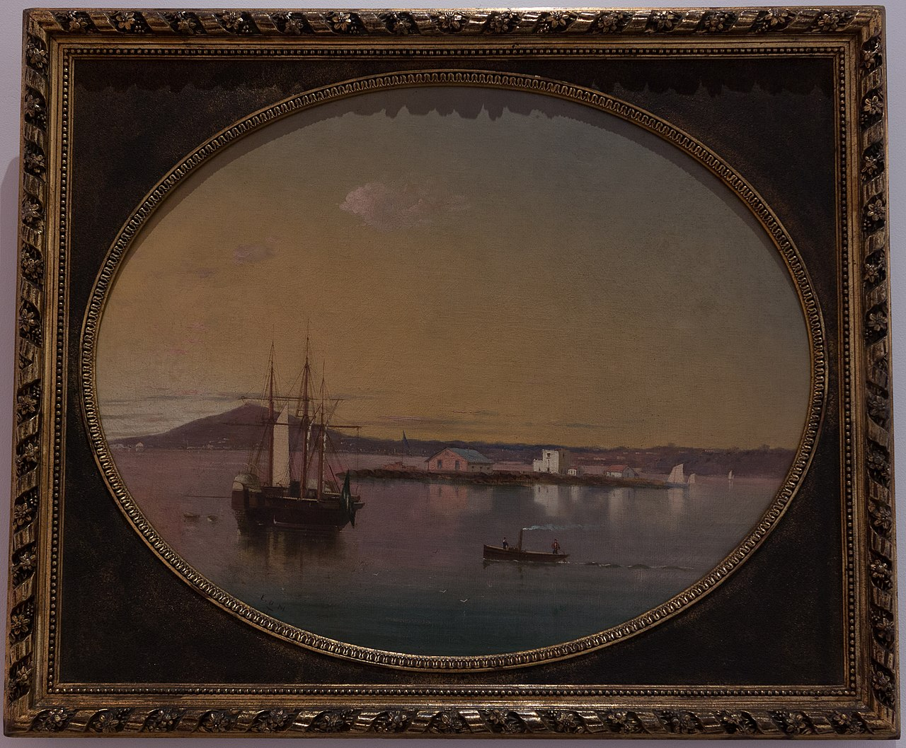
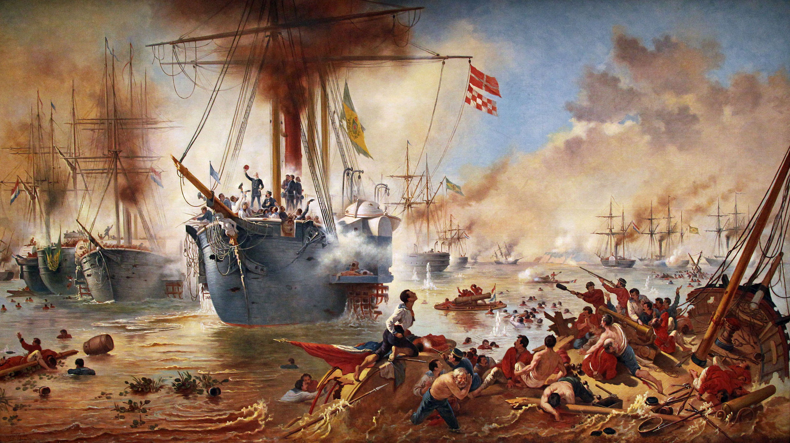

Guerras Brasileiras

|

|

|

|

|
 |
| Revoltas Coloniais | Guerra de Independência | Guerra da Cisplatina | Guerra do Paraguai | Guerra de Canudos | Batalhas da FEB |
| (XVII - XVIII) | (1822 - 1824) | (1825 - 1828) | (1865 - 1870) | (1896 - 1897) | (1942 - 1945) |
| ● | ● | ● | ● | ● | ● |
Guerra do Paraguai
Início
A Guerra do Paraguai, ocorrida entre 1864-1870, foi o maior conflito bélico já ocorrido na América do Sul. Envolvendo de um lado o Brasil, Argentina e Uruguai, e do outro o próprio Paraguai, esse conflito ficou marcado na história por quase ter acarretado um extermínio em massa de toda a população paraguaia.
As informações disponíveis sobre as causas do conflito nem sempre são precisas, mas ao decorrer da história alguns historiadores criaram versões que mais se aproximavam das causas reais do conflito, por meio da Historiologia. Dentre elas, destacam-se 3:
- Historiografia tradicional - essa historiografia indicava que a ganância de Solano López, ditador do Paraguai na época, foi o principal causador do conflito. Seu desejo de grandeza o levou a tomar decisões precipitadas e sem nexo que desencandearam o conflito. Essa historiografia desconsidera vários eventos importantes no contexto geopolítico da época. Por isso e também pela falta de evidências escritas, essa historiografia foi descartada por volta da década de 1960.
- Historiografia revisionista - tomou força após o desuso da historiografia tradicional, por volta de 1960. Baseia-se no fato de que o Paraguai estava se tornando uma potência na América do Sul de forma muito exponencial e autônoma, o que acabou por incomodar a Inglaterra, que até então era a maior potência da época. Para frear o crescimento, o Brasil e a Argentina foram manipulados pelos ingleses a guerrearem com o Paraguai.
- Historiografia pós-revisionista - a última entre as 3, é a mais atual e a mais bem vista entre os historiadores por possuir comprovações documentais. Essa versão baseia-se que o conflito foi desencadeado pelas contradições e disputas das nações platinas na segunda metade do século XIX.
Causas da guerra do Paraguai
Como citado anteriormente, a Guerra do Paraguai resultou dos impasses e contradições travadas pelos países da região da bacia platina. Outras versões se provaram erradas, como a de que a Inglaterra teria influenciado o Brasil. Na verdade, Brasil e Inglaterra mantiveram relações cortadas de 1862 a 1865 como desdobramento da Questão Christie*. Além disso, existem evidências de que os ingleses tentaram evitar o início desse conflito, ao invés de o engajarem.
* A Questão Christie foi um desentendimento entre Brasil e Inglaterra provocado pelo posicionamento brasileiro em relação à escravatura. Após inúmeros países terem abolido a escravidão, o Brasil continuava usando esse tipo de mão de obra em larga escala. Leis marítimas impostas pela Inglaterra tentaram enfraquecer o comércio de escravos para o Brasil, mas sem sucesso. Após turbulências e desentendimentos, o Brasil e a Inglaterra cortaram relações por um pouco mais de meia década, em meados do século XIX. Se quiser saber mais sobre a Questão Christie e seus desdobramentos, visite aqui.
Para compreender melhor o início das contradições e conflitos, é necessário entender as motivações por trás de cada uma dessas nações, dado o contexto geopolítico da época.
- O Paraguai procurava estabelecer autoridade na região e também possuía algumas disputas territoriais com o Brasil e a Argentina.
- A Argentina buscava consolidar seu território e impedir mais fragmentações territoriais. Além disso, a Argentina também procurava derrotar os rebeldes Federalistas.
- O Uruguai passava por um momento de instabilidade após vários anos em guerra civil. Travada pelos chamados blancos e colorados, essa guerra teve grande influência no contexto político da região platina.
- O Brasil procurava reforçar sua posição de potência e garantir o acesso livre para a navegação de navios na bacia platina.
A situação na região começou a tomar rumos complicados a partir de 1862. Nessa data, Solano López assumiu a presidência do Paraguai e decidiu fortalecer relações com os federalistas, que lutavam contra o governo argentino. Essa aproximação entre paraguaios e federalistas possibilitou a ligação do Paraguai com os blancos uruguaios.
Os blancos uruguaios, por sua vez, travavam uma guerra contra a facção política local conhecida como colorados. Estes tinham o apoio do governo argentino, já que os blancos eram aliados dos federalistas.
A partir de 1863, o governo brasileiro realizou uma política de intervenção na Guerra Civil Uruguaia pelo lado dos colorados. O pretexto seria a reparação contra agressões feitas por blancos contra cidadãos brasileiros no Uruguai. A Argentina apoiava a intervenção brasileira, mas não se envolveu diretamente.
A interferência do Brasil no conflito desagradou fortemente Solano López, aliado dos blancos. O ditador foi convecido que a ação brasileira visava interesses anexionistas e que a próxima nação alvo desse expansionismo era o Paraguai. Na realidade, o Brasil não possuía interesses expansionistas, e sim econômicos, visando garantir os negócios de brasileiros no Uruguai e destituir os blancos fortemente antibrasileiros.
Solano López deu um ultimato ao governo brasileiro, em agosto de 1864, para que este não interviesse nos assuntos uruguaios. O governo brasileiro ignorou as advertências paraguaias e, em setembro do mesmo ano, invadiu o Uruguai em apoio aos colorados. A invasão brasileira destituiu o governo blanco e colocou os colorados no poder.
Como represália à invasão do Uruguai pelo Brasil, o Paraguai aprisionou uma embarcação brasileira que navegava pelo rio Paraguai – o Marquês de Olinda – e invadiu o Mato Grosso em dezembro de 1864, considerado um dos grandes acontecimentos que acarretou o início da guerra.
A entrada da Argentina no conflito ocorreu quando as tropas paraguaias, com o objetivo de socorrer os blancos uruguaios, invadiram o território argentino. Essa invasão aconteceu porque o presidente argentino não autorizou a passagem das tropas paraguaias pelo seu território. Com isso, Brasil, Argentina e Uruguai – agora governado pelos colorados – reuniram-se em uma aliança contra o governo paraguaio.
Por dentro do conflito
O início do conflito foi marcado pela ocupação do Mato Grosso, conduzida por 7.700 soldados paraguaios. Os defensores, em desvantagem numérica, foram facilmente derrotados. A má infraestrutura da região contribuiu para que esse território continuasse sob posse paraguaia até meados de 1868, com único caminho para sendo através da navegação pelos rios da Bacia Platina.
Em seguida, as forças de Solano López foram encaminhadas em direção ao Rio Grande do Sul e ao Uruguai com o objetivo de socorrer os blancos na guerra contra o Brasil e os colorados. Para isso, solicitou passagem por Corrientes para Mitre, que como citado anteriormente, foi negada.
Como consequência, Solano López declarou guerra à Argentina e invadiu Corrientes. Essa declaração de guerra ocasionou o surgimento da Tríplice Aliança, formada por Brasil e Argentina, juntamente com colorados uruguaios. Essa aliança foi formalizada em 1º de maio de 1865.
A ofensiva paraguaia no Rio Grande do Sul e em Corrientes foi um grande fracasso. As tropas paraguaias encontraram grande resistência local e foram cercadas por tropas adversárias, sendo forçadas à rendição ou retirada. A partir dessas derrotas, que ocorreram na segunda metade de 1865, o Paraguai assumiu uma posição defensiva na guerra.
Coube aos membros da Tríplice Aliança organizar os ataques contra as forças paraguaias. Para o Brasil, a guerra representava um verdadeiro pesadelo logístico, uma vez que acontecia em uma região de difícil acesso, distante dos grandes centros brasileiros.
Um confronto extremamente importante para os rumos da guerra aconteceu em junho de 1865: a Batalha Naval de Riachuelo. Nessa batalha, a Marinha brasileira alcançou uma vitória importantíssima, destruiu parte considerável da frota naval paraguaia e garantiu o controle das águas platinas, enfraquecendo e isolando o Paraguai.
A fase final da guerra foi marcada pelo esgotamento do Paraguai e pelas sucessivas derrotas. Depois da conquista de Assunção (capital do Paraguai), a guerra transformou-se em uma caçada a Solano López — que foi considerado traidor da pátria pelo governo provisório paraguaio a partir de 1869. Nesse período (1868-1869), os exércitos brasileiros foram liderados por Caxias, o maior nome do exército brasileiro.
A partir de finais de 1869, a liderança dos exércitos brasileiros foi assumida por Conde d’Eu, já que Caxias era contrário à continuação do conflito. A caçada a Solano encerrou-se na batalha de Cerro Corá, em março de 1870, quando soldados brasileiros mataram o ex-ditador paraguaio. Finalizava-se assim a Guerra do Paraguai.
Consequências da Guerra
As maiores consequências da Guerra do Paraguai foram as mortes nos quatro países envolvidos no conflito. O Paraguai perdeu uma grande parte da sua população, especialmente entre os homens. A tríplice aliança também viu morrer boa parte de seus jovens combatentes.
Por conta da alta mortalidade nos combates e do alistamento forçado, especialmente da população pobre e também dos escravizados (que eram enviados para a guerra no lugar dos senhores) a Guerra acabou atingindo diretamente a população pobre e negra. Para dar conta da manutenção da guerra o Brasil recorreu à Inglaterra, aumentando, com isso, a sua dívida com a nação europeia.
Uma força que se consolidou neste fim de século XIX foi o Exército, que se tornou um importante personagem político no último ato do Império brasileiro. Assim, a popularidade da monarquia foi diminuindo, enquanto outras forças ganhavam projeção e destaque na política nacional. A partir de 1870, quando teve fim a Guerra do Paraguai, o exército se manteve como uma importante força política e as elites civis, por diversas razões, enriqueceram. Não à toa é na década de 1870 que o Partido Republicano se formou e marcou os últimos anos de monarquia no Brasil.
A Guerra do Paraguai viu crescerem duas importantes lideranças republicanas, que participaram do conflito: Deodoro da Fonseca, o primeiro presidente após a proclamação da República; e Floriano Peixoto, o segundo presidente militar. Fato é que o fim do império e o início turbulento da república foram marcados pela ação direta dos militares, que protagonizavam as crises e disputas políticas que ocorriam no final do século XIX. O novo período foi marcado por uma modernização conservadora e pelas forças armadas conduzindo a república.